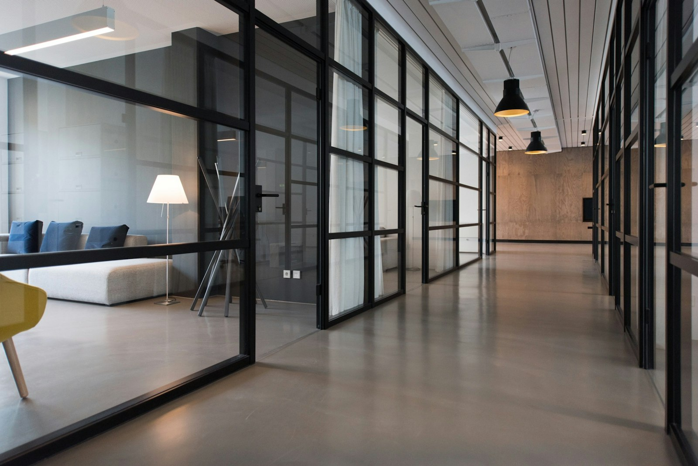

Soporte audiovisual en toda España
Soporte técnico audiovisual rápido, eficiente y fiable.
Soporte y mantenimiento garantizados para tu circuito digital, con cobertura nacional y un equipo preparado para resolver incidencias, mantener equipos y coordinar operaciones audiovisuales.

Cobertura nacional
Operativa y mantenimiento para entornos audiovisuales
Digital Signage, logística e inventario bajo una misma coordinación.

¿Quiénes somos?
Especialistas en soporte audiovisual y Digital Signage.
En Yokup, ofrecemos soluciones adaptadas a cada cliente para la gestión, soporte y mantenimiento de sistemas audiovisuales en entornos profesionales.
Experiencia
Más de 10 años de experiencia trabajando con empresas de toda España.
Profesionales
Un equipo de más de 200 profesionales altamente cualificados para cada intervención.
Nuestros servicios
Soluciones especializadas para la gestión y el mantenimiento audiovisual.
Soporte para Digital Signage
Solucionamos incidencias y realizamos mantenimiento correctivo y preventivo para evitar interrupciones en el servicio.
Gestión logística audiovisual
Coordinamos transporte, instalación y almacenaje de equipos audiovisuales con máxima eficiencia operativa.
Inventarios y mantenimiento
Controlamos inventario y mantenimiento preventivo para maximizar la vida útil y el funcionamiento óptimo de los equipos.
¿Por qué elegirnos?
Razones por las que nuestros clientes confían en nosotros.
Atendemos incidencias con rapidez para minimizar el impacto en la operativa de nuestros clientes.
Brindamos soporte técnico en todo el territorio español, asegurando disponibilidad sin importar la ubicación.
Nuestro equipo está formado por especialistas con amplia experiencia en soporte audiovisual y digital signage.
Empleamos herramientas de última generación para garantizar soluciones eficaces y adaptadas a cada necesidad.
Contacto
Trabajemos juntos.
Cuéntanos qué necesitas y te ayudaremos con soporte, mantenimiento o coordinación audiovisual para tu circuito digital.
Dirección
Carrer del Montseny, 29, Barcelona, España